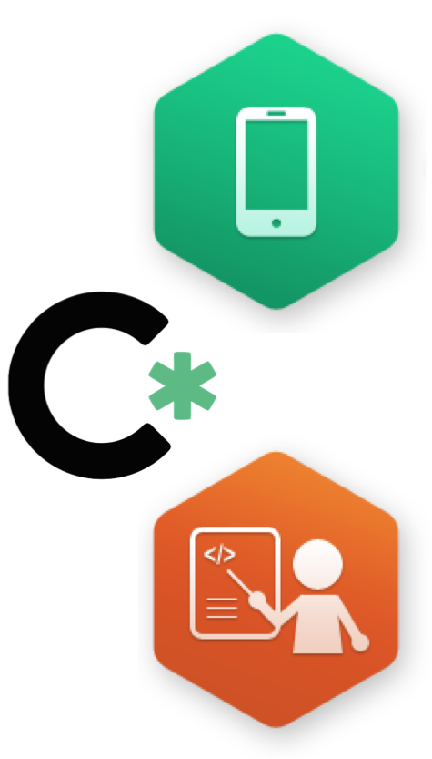
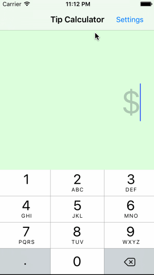
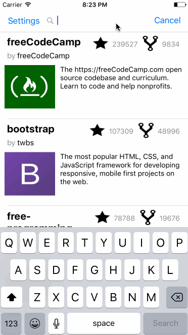
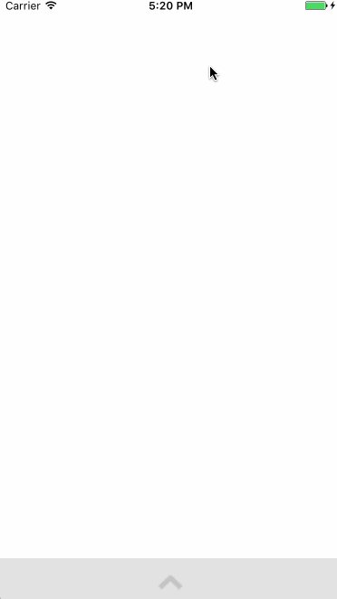
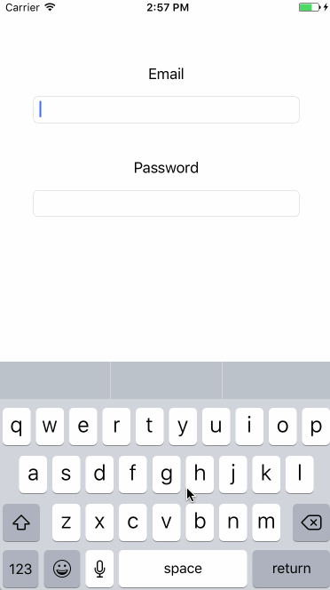

I led and mentored students in 2 hour classes in the 12-week iOS Codepath University Bbootcamp. Following an introdutory project to get acquanted with iOS development, I worked on a new app each week in week-long sprints throughout the program, ahead of students. As a teaching assistant, I was responsible for holding class-like sessions the following week covering the material and key concepts for the week's project and labs. On the weekends, I would convene with CodePath founders and other TAs across the country, providing feedback, bug fixes, and experimental improvements to help grow and refine the program.
Skills Learned:
- Swift -- iOS
- Class Management
- Liason between UF and CodePath founders
- Skillsets in projects:
- Working with RESTful APIs
- MongoDB
- Heroku
- Parse

Tip Calculator
- User can enter a bill amount, choose a tip percentage, and see the tip and total values.
- Settings page to change the default tip percentage.
- Additional Features:
- UI animations
- I implemented a toggling decimal keyboard that appears when the user is entering the bill that disappears after the user clicks elsewhere
- I implemented a sliding bar to split the check (possible of splitting the check to a party of up to 5)

Flicks
- User can view movie details by tapping on a cell
- User can select from a tab bar for either Now Playing or Top Rated movies
- Customized the selection effect of the cell
- Additional Features:
- UI animations
- User can search for a movie
- User can pull to refresh the movie list

- User can sign up to create a new account using Parse authentication
- User can log in and log out of his or her account
- The current signed in user is persisted across app restarts
- User can take a photo, add a caption, and post it to "Instagram"
- User can view the last 20 posts submitted to "Instagram"
- Additional Features:
- After the user submits a new post, shows a progress HUD while the post is being uploaded to Parse
- Allow the logged in user to add a profile photo
- Displays the profile photo with each post

Foodie
- User can find nearest restaurants and events
- Table rows for search results should be dynamic height according to the content height
- Implemented map view of restaurant results
- Implemented the restaurant detail page
- Additional Features:
- Users can view a filters page with additional filtering options (by types of food)

Tweeter
- User can sign in using OAuth login flow
- User can view last 20 tweets from their home timeline
- The current signed in user will be persisted across restarts
- In the home timeline, user can view tweet with the user profile picture, username, tweet text, and timestamp
- Retweeting and favoriting increment the retweet and favorite count
- Additional Features:
- User can pull to refresh live tweets

More Lab Work:


